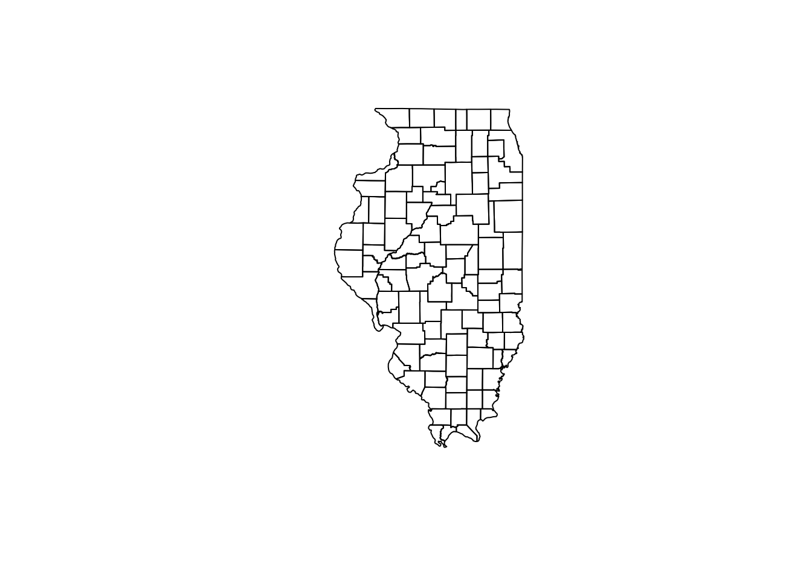

R is OK for exploritory mapping - loading data in and seeing how it looks geographically. There is a better open-source option out there called QGis. If you’re interested, let me know and I can point out some good resources.
But fair warning: mapping and data is pretty much a rabbit hole all unto itself.
library(readr)
library(ggplot2)
library(ggthemes)
library(rgdal)## Loading required package: sp## rgdal: version: 1.2-7, (SVN revision 660)
## Geospatial Data Abstraction Library extensions to R successfully loaded
## Loaded GDAL runtime: GDAL 2.1.2, released 2016/10/24
## Path to GDAL shared files: /Library/Frameworks/R.framework/Versions/3.3/Resources/library/rgdal/gdal
## Loaded PROJ.4 runtime: Rel. 4.9.1, 04 March 2015, [PJ_VERSION: 491]
## Path to PROJ.4 shared files: /Library/Frameworks/R.framework/Versions/3.3/Resources/library/rgdal/proj
## Linking to sp version: 1.2-4library(dplyr)##
## Attaching package: 'dplyr'## The following objects are masked from 'package:stats':
##
## filter, lag## The following objects are masked from 'package:base':
##
## intersect, setdiff, setequal, unionlibrary(ggmap)
# Loading shapefiles
ill <- readOGR(dsn = "ILcounties/simplified.shp")## OGR data source with driver: ESRI Shapefile
## Source: "ILcounties/simplified.shp", layer: "simplified"
## with 102 features
## It has 5 fieldsLibraries you should be familiar with. There are a few new ones we need: rgdal, dplyr and ggmap.
Shapefiles are a data standard developed by ESRI, one of the premier geographic companies around. They developed Arc Map, which is an expensive mapping program that the free open source QGis seeks to replace. I use both.
The thing about shapefiles is they have geographies and data associated with those geographies. We can access that data but instead of using a $ for a dataframe, we use an @ sign.
# divides things into slots geodata in one, data in another etc
head(ill@data, n = 10)## STATEFP10 COUNTYFP10 COUNTYNS10 GEOID10 NAMELSAD10
## 0 17 009 00424206 17009 Brown County
## 1 17 033 00424218 17033 Crawford County
## 2 17 085 00424244 17085 Jo Daviess County
## 3 17 065 00424234 17065 Hamilton County
## 4 17 109 01784729 17109 McDonough County
## 5 17 135 01784866 17135 Montgomery County
## 6 17 041 00424222 17041 Douglas County
## 7 17 181 01785113 17181 Union County
## 8 17 115 00424256 17115 Macon County
## 9 17 201 01785216 17201 Winnebago Countysummary(ill@data)## STATEFP10 COUNTYFP10 COUNTYNS10 GEOID10 NAMELSAD10
## 17:102 001 : 1 00422190: 1 17001 : 1 Adams County : 1
## 003 : 1 00422191: 1 17003 : 1 Alexander County: 1
## 005 : 1 00422247: 1 17005 : 1 Bond County : 1
## 007 : 1 00424202: 1 17007 : 1 Boone County : 1
## 009 : 1 00424203: 1 17009 : 1 Brown County : 1
## 011 : 1 00424204: 1 17011 : 1 Bureau County : 1
## (Other):96 (Other) :96 (Other):96 (Other) :96There’s other important information that should be associated with shapefiles. The projection tells all this how to appear when it’s plotted.
OK, real quick: The Earth is not flat, it’s a sphere. Taking the stuff on a round surface and presenting it in such a way that it makes sense is projection. There are many projections out there - the way Google maps shows you the world is through a projection called Mercator, which some people hate. Feel free to get into online fights about map projections.
The worst thing is if there isn’t a projection. Let’s see if this data has one:
ill@proj4string## CRS arguments:
## +proj=longlat +datum=NAD83 +no_defs +ellps=GRS80 +towgs84=0,0,0Yay, NAD1983. You can learn more about that here: https://en.wikipedia.org/wiki/North_American_Datum
Let’s see what the map looks like:
plot(ill)
Success. Complete map of all the counties in Illinois. You should know that this shapefile has been worked a bit by me. It’s been simplified, which means many points were removed from the polygons in order to make the overall filesize smaller. There’s a loss of some exactness, but the tradeoff is that you’re not generating huge files that can’t be opened easily.
This kind of thing is an acceptable and a compromise used widely.
Now let’s bring in some data we want to use:
census16 <- read.csv("census2016_all.csv", stringsAsFactors = FALSE)
head(census16)## Place TotalPop_2010 TotalPop_2016 y2010_under64
## 1 Adams County 134310 133156 122564
## 2 Alexander County 16428 12956 15034
## 3 Bond County 35542 33648 32876
## 4 Boone County 108254 107006 101839
## 5 Brown County 13826 13524 12971
## 6 Bureau County 69844 66718 63529
## y2010_65andover y2016_under64 y2016_65andover y2010_NHwhite
## 1 11746 120244 12912 125010
## 2 1394 11651 1305 9906
## 3 2666 30732 2916 31574
## 4 6415 99072 7934 81568
## 5 855 12610 914 10344
## 6 6315 59738 6980 62828
## y2010_Minority y2010_Hispanic y2016_NHwhite y2016_Minority
## 1 9300 1574 122518 10638
## 2 6522 312 8040 4916
## 3 3968 1108 29426 4222
## 4 26686 21924 78980 28026
## 5 3482 810 9960 3564
## 6 7016 5408 58792 7926
## y2016_Hispanic rate_10under64 rate_10over65 rate_10under19
## 1 2036 912.55 87.45 628.90
## 2 258 915.14 84.86 628.20
## 3 1250 924.99 75.01 617.19
## 4 22724 940.74 59.26 657.68
## 5 858 938.16 61.84 592.87
## 6 6008 909.58 90.42 628.19
## rate_16under64 rate_16over65 rate_16under19 rate_10NHwite rate_16NHwhite
## 1 903.03 96.97 624.12 930.76 920.11
## 2 899.27 100.73 626.27 930.76 620.56
## 3 913.34 86.66 607.67 930.76 874.52
## 4 925.85 74.15 641.46 930.76 738.09
## 5 932.42 67.58 586.66 930.76 736.47
## 6 895.38 104.62 618.29 930.76 881.20
## rate_10minority rate_16minority rate_10HispanicOnly rate_16HispanicOnly
## 1 69.24 79.89 11.72 15.29
## 2 397.01 379.44 18.99 19.91
## 3 111.64 125.48 31.17 37.15
## 4 246.51 261.91 202.52 212.36
## 5 251.84 263.53 58.59 63.44
## 6 100.45 118.80 77.43 90.05
## chg_total chg_under64 chg_65over chg_under19 chg_NHwhite chg_Minority
## 1 -0.86 -1.89 9.93 -1.61 -1.99 14.39
## 2 -21.13 -22.50 -6.38 -21.38 -18.84 -24.62
## 3 -5.33 -6.52 9.38 -6.79 -6.80 6.40
## 4 -1.15 -2.72 23.68 -3.59 -3.17 5.02
## 5 -2.18 -2.78 6.90 -3.21 -3.71 2.35
## 6 -4.48 -5.97 10.53 -5.98 -6.42 12.97
## chg_HispanicOnly Rchg_under64 Rchg_65over Rchg_under19 Rchg_NHwhite
## 1 29.35 -1.04 10.89 -0.76 -1.14
## 2 -17.31 -1.73 18.70 -0.31 2.91
## 3 12.82 -1.26 15.53 -1.54 -1.56
## 4 3.65 -1.58 25.13 -2.47 -2.04
## 5 5.93 -0.61 9.28 -1.05 -1.56
## 6 11.09 -1.56 15.70 -1.58 -2.04
## Rchg_Minority Rchg_HispanicOnly
## 1 15.38 30.46
## 2 -4.43 4.84
## 3 12.40 19.19
## 4 6.25 4.86
## 5 4.64 8.28
## 6 18.27 16.30summary(census16)## Place TotalPop_2010 TotalPop_2016
## Length:102 Min. : 8610 Min. : 8048
## Class :character 1st Qu.: 29326 1st Qu.: 28377
## Mode :character Median : 54610 Median : 52641
## Mean : 251796 Mean : 251011
## 3rd Qu.: 108138 3rd Qu.: 106426
## Max. :10399000 Max. :10406998
## y2010_under64 y2010_65andover y2016_under64 y2016_65andover
## Min. : 7734 Min. : 855 Min. : 7087 Min. : 914
## 1st Qu.: 26592 1st Qu.: 2638 1st Qu.: 25462 1st Qu.: 2771
## Median : 49502 Median : 4658 Median : 47243 Median : 5048
## Mean : 235956 Mean : 15840 Mean : 232665 Mean : 18346
## 3rd Qu.: 101463 3rd Qu.: 8593 3rd Qu.: 98414 3rd Qu.: 9770
## Max. :9776259 Max. :622741 Max. :9701556 Max. :705442
## y2010_NHwhite y2010_Minority y2010_Hispanic y2016_NHwhite
## Min. : 7846 Min. : 180 Min. : 88.0 Min. : 7148
## 1st Qu.: 28480 1st Qu.: 936 1st Qu.: 362.5 1st Qu.: 26323
## Median : 49589 Median : 3886 Median : 1112.0 Median : 47711
## Mean : 160386 Mean : 91410 Mean : 39903.9 Mean : 154833
## 3rd Qu.: 94294 3rd Qu.: 13046 3rd Qu.: 5041.5 3rd Qu.: 89347
## Max. :4568702 Max. :5830298 Max. :2496992.0 Max. :4416364
## y2016_Minority y2016_Hispanic rate_10under64 rate_10over65
## Min. : 242 Min. : 112.0 Min. :892.3 Min. : 36.71
## 1st Qu.: 1235 1st Qu.: 474.5 1st Qu.:908.4 1st Qu.: 75.23
## Median : 4111 Median : 1287.0 Median :915.4 Median : 84.57
## Mean : 96178 Mean : 42773.3 Mean :918.3 Mean : 81.71
## 3rd Qu.: 15006 3rd Qu.: 5672.5 3rd Qu.:924.8 3rd Qu.: 91.63
## Max. :5990634 Max. :2637758.0 Max. :963.3 Max. :107.74
## rate_10under19 rate_16under64 rate_16over65 rate_16under19
## Min. :592.9 Min. :870.0 Min. : 48.31 Min. :586.7
## 1st Qu.:620.4 1st Qu.:898.6 1st Qu.: 85.02 1st Qu.:613.1
## Median :626.1 Median :905.3 Median : 94.68 Median :619.9
## Mean :627.3 Mean :907.2 Mean : 92.75 Mean :620.1
## 3rd Qu.:631.4 3rd Qu.:915.0 3rd Qu.:101.39 3rd Qu.:624.5
## Max. :668.2 Max. :951.7 Max. :130.04 Max. :658.2
## rate_10NHwite rate_16NHwhite rate_10minority rate_16minority
## Min. :930.8 Min. :424.4 Min. : 17.71 Min. : 24.72
## 1st Qu.:930.8 1st Qu.:836.2 1st Qu.: 31.50 1st Qu.: 42.41
## Median :930.8 Median :909.5 Median : 78.43 Median : 90.55
## Mean :930.8 Mean :870.2 Mean :115.52 Mean :129.79
## 3rd Qu.:930.8 3rd Qu.:957.6 3rd Qu.:145.35 3rd Qu.:163.81
## Max. :930.8 Max. :975.3 Max. :560.66 Max. :575.64
## rate_10HispanicOnly rate_16HispanicOnly chg_total
## Min. : 6.97 Min. : 10.31 Min. :-21.130
## 1st Qu.: 12.59 1st Qu.: 15.79 1st Qu.: -4.263
## Median : 20.82 Median : 26.18 Median : -2.945
## Mean : 43.61 Mean : 49.86 Mean : -2.847
## 3rd Qu.: 48.10 3rd Qu.: 55.49 3rd Qu.: -1.387
## Max. :307.57 Max. :318.02 Max. : 8.070
## chg_under64 chg_65over chg_under19 chg_NHwhite
## Min. :-22.500 Min. :-6.380 Min. :-21.380 Min. :-18.840
## 1st Qu.: -5.622 1st Qu.: 5.918 1st Qu.: -5.485 1st Qu.: -5.978
## Median : -3.995 Median : 9.925 Median : -4.075 Median : -4.390
## Mean : -4.013 Mean :10.951 Mean : -3.969 Mean : -4.497
## 3rd Qu.: -2.325 3rd Qu.:13.568 3rd Qu.: -2.112 3rd Qu.: -3.170
## Max. : 6.770 Max. :42.210 Max. : 6.450 Max. : 2.730
## chg_Minority chg_HispanicOnly Rchg_under64 Rchg_65over
## Min. :-24.620 Min. :-17.31 Min. :-2.7100 Min. : 1.34
## 1st Qu.: 8.523 1st Qu.: 10.62 1st Qu.:-1.4550 1st Qu.:10.45
## Median : 13.595 Median : 17.32 Median :-1.1850 Median :14.02
## Mean : 18.302 Mean : 20.13 Mean :-1.2030 Mean :14.15
## 3rd Qu.: 29.312 3rd Qu.: 29.91 3rd Qu.:-0.9425 3rd Qu.:17.05
## Max. : 73.510 Max. : 75.00 Max. :-0.1500 Max. :31.60
## Rchg_under19 Rchg_NHwhite Rchg_Minority Rchg_HispanicOnly
## Min. :-3.7000 Min. :-5.010 Min. :-4.43 Min. :-3.80
## 1st Qu.:-1.4975 1st Qu.:-2.197 1st Qu.:10.74 1st Qu.:12.18
## Median :-1.1600 Median :-1.355 Median :16.41 Median :20.43
## Mean :-1.1556 Mean :-1.679 Mean :21.82 Mean :23.74
## 3rd Qu.:-0.7725 3rd Qu.:-0.940 3rd Qu.:34.28 3rd Qu.:33.22
## Max. : 0.4300 Max. : 2.910 Max. :85.60 Max. :78.16This is data gleaned from the yearly Census release on population counts. It’s by county, so let’s see if we can join to our shapefile data using county name.
ill$NAMELSAD10 %in% census16$Place## [1] TRUE TRUE TRUE TRUE TRUE TRUE TRUE TRUE TRUE TRUE TRUE TRUE TRUE TRUE
## [15] TRUE TRUE TRUE TRUE TRUE TRUE TRUE TRUE TRUE TRUE TRUE TRUE TRUE TRUE
## [29] TRUE TRUE TRUE TRUE TRUE TRUE TRUE TRUE TRUE TRUE TRUE TRUE TRUE TRUE
## [43] TRUE TRUE TRUE TRUE TRUE TRUE TRUE TRUE TRUE TRUE TRUE TRUE TRUE TRUE
## [57] TRUE TRUE TRUE TRUE TRUE TRUE TRUE TRUE TRUE TRUE TRUE TRUE TRUE TRUE
## [71] TRUE TRUE TRUE TRUE TRUE TRUE TRUE TRUE TRUE TRUE TRUE TRUE TRUE TRUE
## [85] TRUE TRUE TRUE TRUE TRUE TRUE TRUE TRUE TRUE TRUE TRUE TRUE TRUE TRUE
## [99] TRUE TRUE TRUE TRUEAll true. So let’s join the census data to the shapefile data.
ill@data <- left_join(ill@data, census16, by = c('NAMELSAD10' = 'Place'))## Warning: Column `NAMELSAD10`/`Place` joining factor and character vector,
## coercing into character vectorhead(ill@data)## STATEFP10 COUNTYFP10 COUNTYNS10 GEOID10 NAMELSAD10 TotalPop_2010
## 1 17 009 00424206 17009 Brown County 13826
## 2 17 033 00424218 17033 Crawford County 39620
## 3 17 085 00424244 17085 Jo Daviess County 45296
## 4 17 065 00424234 17065 Hamilton County 16904
## 5 17 109 01784729 17109 McDonough County 65214
## 6 17 135 01784866 17135 Montgomery County 60178
## TotalPop_2016 y2010_under64 y2010_65andover y2016_under64
## 1 13524 12971 855 12610
## 2 38616 36281 3339 34992
## 3 43540 40461 4835 37878
## 4 16122 15231 1673 14505
## 5 61992 60581 4633 57126
## 6 57904 54982 5196 52315
## y2016_65andover y2010_NHwhite y2010_Minority y2010_Hispanic
## 1 914 10344 3482 810
## 2 3624 36422 3198 728
## 3 5662 43278 2018 1240
## 4 1617 16456 448 216
## 5 4866 57950 7264 1738
## 6 5589 56644 3534 936
## y2016_NHwhite y2016_Minority y2016_Hispanic rate_10under64 rate_10over65
## 1 9960 3564 858 938.16 61.84
## 2 35134 3482 906 915.72 84.28
## 3 41268 2272 1290 893.26 106.74
## 4 15516 606 280 901.03 98.97
## 5 54616 7376 1702 928.96 71.04
## 6 54030 3874 1042 913.66 86.34
## rate_10under19 rate_16under64 rate_16over65 rate_16under19 rate_10NHwite
## 1 592.87 932.42 67.58 586.66 930.76
## 2 615.45 906.15 93.85 609.36 930.76
## 3 613.26 869.96 130.04 606.61 930.76
## 4 625.59 899.70 100.30 620.27 930.76
## 5 617.98 921.51 78.49 617.87 930.76
## 6 617.80 903.48 96.52 609.80 930.76
## rate_16NHwhite rate_10minority rate_16minority rate_10HispanicOnly
## 1 736.47 251.84 263.53 58.59
## 2 909.83 80.72 90.17 18.37
## 3 947.82 44.55 52.18 27.38
## 4 962.41 26.50 37.59 12.78
## 5 881.02 111.39 118.98 26.65
## 6 933.10 58.73 66.90 15.55
## rate_16HispanicOnly chg_total chg_under64 chg_65over chg_under19
## 1 63.44 -2.18 -2.78 6.90 -3.21
## 2 23.46 -2.53 -3.55 8.54 -3.50
## 3 29.63 -3.88 -6.38 17.10 -4.92
## 4 17.37 -4.63 -4.77 -3.35 -5.44
## 5 27.46 -4.94 -5.70 5.03 -4.96
## 6 18.00 -3.78 -4.85 7.56 -5.02
## chg_NHwhite chg_Minority chg_HispanicOnly Rchg_under64 Rchg_65over
## 1 -3.71 2.35 5.93 -0.61 9.28
## 2 -3.54 8.88 24.45 -1.05 11.36
## 3 -4.64 12.59 4.03 -2.61 21.83
## 4 -5.71 35.27 29.63 -0.15 1.34
## 5 -5.75 1.54 -2.07 -0.80 10.49
## 6 -4.61 9.62 11.32 -1.11 11.79
## Rchg_under19 Rchg_NHwhite Rchg_Minority Rchg_HispanicOnly
## 1 -1.05 -1.56 4.64 8.28
## 2 -0.99 -1.03 11.71 27.71
## 3 -1.08 -0.80 17.13 8.22
## 4 -0.85 -1.14 41.85 35.92
## 5 -0.02 -0.85 6.81 3.04
## 6 -1.29 -0.87 13.91 15.76summary(ill@data)## STATEFP10 COUNTYFP10 COUNTYNS10 GEOID10 NAMELSAD10
## 17:102 001 : 1 00422190: 1 17001 : 1 Length:102
## 003 : 1 00422191: 1 17003 : 1 Class :character
## 005 : 1 00422247: 1 17005 : 1 Mode :character
## 007 : 1 00424202: 1 17007 : 1
## 009 : 1 00424203: 1 17009 : 1
## 011 : 1 00424204: 1 17011 : 1
## (Other):96 (Other) :96 (Other):96
## TotalPop_2010 TotalPop_2016 y2010_under64 y2010_65andover
## Min. : 8610 Min. : 8048 Min. : 7734 Min. : 855
## 1st Qu.: 29326 1st Qu.: 28377 1st Qu.: 26592 1st Qu.: 2638
## Median : 54610 Median : 52641 Median : 49502 Median : 4658
## Mean : 251796 Mean : 251011 Mean : 235956 Mean : 15840
## 3rd Qu.: 108138 3rd Qu.: 106426 3rd Qu.: 101463 3rd Qu.: 8593
## Max. :10399000 Max. :10406998 Max. :9776259 Max. :622741
##
## y2016_under64 y2016_65andover y2010_NHwhite y2010_Minority
## Min. : 7087 Min. : 914 Min. : 7846 Min. : 180
## 1st Qu.: 25462 1st Qu.: 2771 1st Qu.: 28480 1st Qu.: 936
## Median : 47243 Median : 5048 Median : 49589 Median : 3886
## Mean : 232665 Mean : 18346 Mean : 160386 Mean : 91410
## 3rd Qu.: 98414 3rd Qu.: 9770 3rd Qu.: 94294 3rd Qu.: 13046
## Max. :9701556 Max. :705442 Max. :4568702 Max. :5830298
##
## y2010_Hispanic y2016_NHwhite y2016_Minority
## Min. : 88.0 Min. : 7148 Min. : 242
## 1st Qu.: 362.5 1st Qu.: 26323 1st Qu.: 1235
## Median : 1112.0 Median : 47711 Median : 4111
## Mean : 39903.9 Mean : 154833 Mean : 96178
## 3rd Qu.: 5041.5 3rd Qu.: 89347 3rd Qu.: 15006
## Max. :2496992.0 Max. :4416364 Max. :5990634
##
## y2016_Hispanic rate_10under64 rate_10over65 rate_10under19
## Min. : 112.0 Min. :892.3 Min. : 36.71 Min. :592.9
## 1st Qu.: 474.5 1st Qu.:908.4 1st Qu.: 75.23 1st Qu.:620.4
## Median : 1287.0 Median :915.4 Median : 84.57 Median :626.1
## Mean : 42773.3 Mean :918.3 Mean : 81.71 Mean :627.3
## 3rd Qu.: 5672.5 3rd Qu.:924.8 3rd Qu.: 91.63 3rd Qu.:631.4
## Max. :2637758.0 Max. :963.3 Max. :107.74 Max. :668.2
##
## rate_16under64 rate_16over65 rate_16under19 rate_10NHwite
## Min. :870.0 Min. : 48.31 Min. :586.7 Min. :930.8
## 1st Qu.:898.6 1st Qu.: 85.02 1st Qu.:613.1 1st Qu.:930.8
## Median :905.3 Median : 94.68 Median :619.9 Median :930.8
## Mean :907.2 Mean : 92.75 Mean :620.1 Mean :930.8
## 3rd Qu.:915.0 3rd Qu.:101.39 3rd Qu.:624.5 3rd Qu.:930.8
## Max. :951.7 Max. :130.04 Max. :658.2 Max. :930.8
##
## rate_16NHwhite rate_10minority rate_16minority rate_10HispanicOnly
## Min. :424.4 Min. : 17.71 Min. : 24.72 Min. : 6.97
## 1st Qu.:836.2 1st Qu.: 31.50 1st Qu.: 42.41 1st Qu.: 12.59
## Median :909.5 Median : 78.43 Median : 90.55 Median : 20.82
## Mean :870.2 Mean :115.52 Mean :129.79 Mean : 43.61
## 3rd Qu.:957.6 3rd Qu.:145.35 3rd Qu.:163.81 3rd Qu.: 48.10
## Max. :975.3 Max. :560.66 Max. :575.64 Max. :307.57
##
## rate_16HispanicOnly chg_total chg_under64 chg_65over
## Min. : 10.31 Min. :-21.130 Min. :-22.500 Min. :-6.380
## 1st Qu.: 15.79 1st Qu.: -4.263 1st Qu.: -5.622 1st Qu.: 5.918
## Median : 26.18 Median : -2.945 Median : -3.995 Median : 9.925
## Mean : 49.86 Mean : -2.847 Mean : -4.013 Mean :10.951
## 3rd Qu.: 55.49 3rd Qu.: -1.387 3rd Qu.: -2.325 3rd Qu.:13.568
## Max. :318.02 Max. : 8.070 Max. : 6.770 Max. :42.210
##
## chg_under19 chg_NHwhite chg_Minority chg_HispanicOnly
## Min. :-21.380 Min. :-18.840 Min. :-24.620 Min. :-17.31
## 1st Qu.: -5.485 1st Qu.: -5.978 1st Qu.: 8.523 1st Qu.: 10.62
## Median : -4.075 Median : -4.390 Median : 13.595 Median : 17.32
## Mean : -3.969 Mean : -4.497 Mean : 18.302 Mean : 20.13
## 3rd Qu.: -2.112 3rd Qu.: -3.170 3rd Qu.: 29.312 3rd Qu.: 29.91
## Max. : 6.450 Max. : 2.730 Max. : 73.510 Max. : 75.00
##
## Rchg_under64 Rchg_65over Rchg_under19 Rchg_NHwhite
## Min. :-2.7100 Min. : 1.34 Min. :-3.7000 Min. :-5.010
## 1st Qu.:-1.4550 1st Qu.:10.45 1st Qu.:-1.4975 1st Qu.:-2.197
## Median :-1.1850 Median :14.02 Median :-1.1600 Median :-1.355
## Mean :-1.2030 Mean :14.15 Mean :-1.1556 Mean :-1.679
## 3rd Qu.:-0.9425 3rd Qu.:17.05 3rd Qu.:-0.7725 3rd Qu.:-0.940
## Max. :-0.1500 Max. :31.60 Max. : 0.4300 Max. : 2.910
##
## Rchg_Minority Rchg_HispanicOnly
## Min. :-4.43 Min. :-3.80
## 1st Qu.:10.74 1st Qu.:12.18
## Median :16.41 Median :20.43
## Mean :21.82 Mean :23.74
## 3rd Qu.:34.28 3rd Qu.:33.22
## Max. :85.60 Max. :78.16
## names(ill)## [1] "STATEFP10" "COUNTYFP10" "COUNTYNS10"
## [4] "GEOID10" "NAMELSAD10" "TotalPop_2010"
## [7] "TotalPop_2016" "y2010_under64" "y2010_65andover"
## [10] "y2016_under64" "y2016_65andover" "y2010_NHwhite"
## [13] "y2010_Minority" "y2010_Hispanic" "y2016_NHwhite"
## [16] "y2016_Minority" "y2016_Hispanic" "rate_10under64"
## [19] "rate_10over65" "rate_10under19" "rate_16under64"
## [22] "rate_16over65" "rate_16under19" "rate_10NHwite"
## [25] "rate_16NHwhite" "rate_10minority" "rate_16minority"
## [28] "rate_10HispanicOnly" "rate_16HispanicOnly" "chg_total"
## [31] "chg_under64" "chg_65over" "chg_under19"
## [34] "chg_NHwhite" "chg_Minority" "chg_HispanicOnly"
## [37] "Rchg_under64" "Rchg_65over" "Rchg_under19"
## [40] "Rchg_NHwhite" "Rchg_Minority" "Rchg_HispanicOnly"Let’s write the data to a csv and read it back again, then get rid of a few columns we don’t need.
write_csv(ill@data,"illdata.csv")
census16 <- read.csv("illdata.csv", stringsAsFactors = FALSE)
census16$STATEFP10=NULL
census16$COUNTYFP10=NULL
census16$COUNTYNS10=NULL
head(census16)## GEOID10 NAMELSAD10 TotalPop_2010 TotalPop_2016 y2010_under64
## 1 17009 Brown County 13826 13524 12971
## 2 17033 Crawford County 39620 38616 36281
## 3 17085 Jo Daviess County 45296 43540 40461
## 4 17065 Hamilton County 16904 16122 15231
## 5 17109 McDonough County 65214 61992 60581
## 6 17135 Montgomery County 60178 57904 54982
## y2010_65andover y2016_under64 y2016_65andover y2010_NHwhite
## 1 855 12610 914 10344
## 2 3339 34992 3624 36422
## 3 4835 37878 5662 43278
## 4 1673 14505 1617 16456
## 5 4633 57126 4866 57950
## 6 5196 52315 5589 56644
## y2010_Minority y2010_Hispanic y2016_NHwhite y2016_Minority
## 1 3482 810 9960 3564
## 2 3198 728 35134 3482
## 3 2018 1240 41268 2272
## 4 448 216 15516 606
## 5 7264 1738 54616 7376
## 6 3534 936 54030 3874
## y2016_Hispanic rate_10under64 rate_10over65 rate_10under19
## 1 858 938.16 61.84 592.87
## 2 906 915.72 84.28 615.45
## 3 1290 893.26 106.74 613.26
## 4 280 901.03 98.97 625.59
## 5 1702 928.96 71.04 617.98
## 6 1042 913.66 86.34 617.80
## rate_16under64 rate_16over65 rate_16under19 rate_10NHwite rate_16NHwhite
## 1 932.42 67.58 586.66 930.76 736.47
## 2 906.15 93.85 609.36 930.76 909.83
## 3 869.96 130.04 606.61 930.76 947.82
## 4 899.70 100.30 620.27 930.76 962.41
## 5 921.51 78.49 617.87 930.76 881.02
## 6 903.48 96.52 609.80 930.76 933.10
## rate_10minority rate_16minority rate_10HispanicOnly rate_16HispanicOnly
## 1 251.84 263.53 58.59 63.44
## 2 80.72 90.17 18.37 23.46
## 3 44.55 52.18 27.38 29.63
## 4 26.50 37.59 12.78 17.37
## 5 111.39 118.98 26.65 27.46
## 6 58.73 66.90 15.55 18.00
## chg_total chg_under64 chg_65over chg_under19 chg_NHwhite chg_Minority
## 1 -2.18 -2.78 6.90 -3.21 -3.71 2.35
## 2 -2.53 -3.55 8.54 -3.50 -3.54 8.88
## 3 -3.88 -6.38 17.10 -4.92 -4.64 12.59
## 4 -4.63 -4.77 -3.35 -5.44 -5.71 35.27
## 5 -4.94 -5.70 5.03 -4.96 -5.75 1.54
## 6 -3.78 -4.85 7.56 -5.02 -4.61 9.62
## chg_HispanicOnly Rchg_under64 Rchg_65over Rchg_under19 Rchg_NHwhite
## 1 5.93 -0.61 9.28 -1.05 -1.56
## 2 24.45 -1.05 11.36 -0.99 -1.03
## 3 4.03 -2.61 21.83 -1.08 -0.80
## 4 29.63 -0.15 1.34 -0.85 -1.14
## 5 -2.07 -0.80 10.49 -0.02 -0.85
## 6 11.32 -1.11 11.79 -1.29 -0.87
## Rchg_Minority Rchg_HispanicOnly
## 1 4.64 8.28
## 2 11.71 27.71
## 3 17.13 8.22
## 4 41.85 35.92
## 5 6.81 3.04
## 6 13.91 15.76Now we have the census data with the geoid attached to each county. There’s a reason we saved the data seperately.
In order to work with ggplot, we need to save the shapefiles in such a way that it works with ggplot. Doing this will remove data unnecessary to understanding the geographies. So we saved it with the geoid so we can rejoin it later.
To transform the shapefiles for ggplot, we use the fortify command
ill_f <- fortify(ill, region="GEOID10")
head(ill_f, n = 5) ## long lat order hole piece id group
## 1 -91.02742 40.19447 1 FALSE 1 17001 17001.1
## 2 -90.91197 40.19309 2 FALSE 1 17001 17001.1
## 3 -90.91476 39.99793 3 FALSE 1 17001 17001.1
## 4 -90.91429 39.93433 4 FALSE 1 17001 17001.1
## 5 -90.91681 39.90961 5 FALSE 1 17001 17001.1Fortify looks like it takes each polygon in a shapefile and changes it to a groupable set of points based on ID. Once we have this dataframe, we can rejoin the data associated with it.
To do that, we need to make sure the class of GEOID10 in each file is the same. Then we can join and write the file out as a csv to use.
ill_f$id <- as.numeric(as.character(ill_f$id))
class(ill_f$id)## [1] "numeric"class(census16$GEOID10)## [1] "integer"ill_f <- left_join(ill_f, census16, by = c('id' = 'GEOID10'))
head(ill_f, n=5)## long lat order hole piece id group NAMELSAD10
## 1 -91.02742 40.19447 1 FALSE 1 17001 17001.1 Adams County
## 2 -90.91197 40.19309 2 FALSE 1 17001 17001.1 Adams County
## 3 -90.91476 39.99793 3 FALSE 1 17001 17001.1 Adams County
## 4 -90.91429 39.93433 4 FALSE 1 17001 17001.1 Adams County
## 5 -90.91681 39.90961 5 FALSE 1 17001 17001.1 Adams County
## TotalPop_2010 TotalPop_2016 y2010_under64 y2010_65andover y2016_under64
## 1 134310 133156 122564 11746 120244
## 2 134310 133156 122564 11746 120244
## 3 134310 133156 122564 11746 120244
## 4 134310 133156 122564 11746 120244
## 5 134310 133156 122564 11746 120244
## y2016_65andover y2010_NHwhite y2010_Minority y2010_Hispanic
## 1 12912 125010 9300 1574
## 2 12912 125010 9300 1574
## 3 12912 125010 9300 1574
## 4 12912 125010 9300 1574
## 5 12912 125010 9300 1574
## y2016_NHwhite y2016_Minority y2016_Hispanic rate_10under64 rate_10over65
## 1 122518 10638 2036 912.55 87.45
## 2 122518 10638 2036 912.55 87.45
## 3 122518 10638 2036 912.55 87.45
## 4 122518 10638 2036 912.55 87.45
## 5 122518 10638 2036 912.55 87.45
## rate_10under19 rate_16under64 rate_16over65 rate_16under19 rate_10NHwite
## 1 628.9 903.03 96.97 624.12 930.76
## 2 628.9 903.03 96.97 624.12 930.76
## 3 628.9 903.03 96.97 624.12 930.76
## 4 628.9 903.03 96.97 624.12 930.76
## 5 628.9 903.03 96.97 624.12 930.76
## rate_16NHwhite rate_10minority rate_16minority rate_10HispanicOnly
## 1 920.11 69.24 79.89 11.72
## 2 920.11 69.24 79.89 11.72
## 3 920.11 69.24 79.89 11.72
## 4 920.11 69.24 79.89 11.72
## 5 920.11 69.24 79.89 11.72
## rate_16HispanicOnly chg_total chg_under64 chg_65over chg_under19
## 1 15.29 -0.86 -1.89 9.93 -1.61
## 2 15.29 -0.86 -1.89 9.93 -1.61
## 3 15.29 -0.86 -1.89 9.93 -1.61
## 4 15.29 -0.86 -1.89 9.93 -1.61
## 5 15.29 -0.86 -1.89 9.93 -1.61
## chg_NHwhite chg_Minority chg_HispanicOnly Rchg_under64 Rchg_65over
## 1 -1.99 14.39 29.35 -1.04 10.89
## 2 -1.99 14.39 29.35 -1.04 10.89
## 3 -1.99 14.39 29.35 -1.04 10.89
## 4 -1.99 14.39 29.35 -1.04 10.89
## 5 -1.99 14.39 29.35 -1.04 10.89
## Rchg_under19 Rchg_NHwhite Rchg_Minority Rchg_HispanicOnly
## 1 -0.76 -1.14 15.38 30.46
## 2 -0.76 -1.14 15.38 30.46
## 3 -0.76 -1.14 15.38 30.46
## 4 -0.76 -1.14 15.38 30.46
## 5 -0.76 -1.14 15.38 30.46write_csv(ill_f,"ill_f.csv")Next: Mapping with ggplot2 and gradient scales!